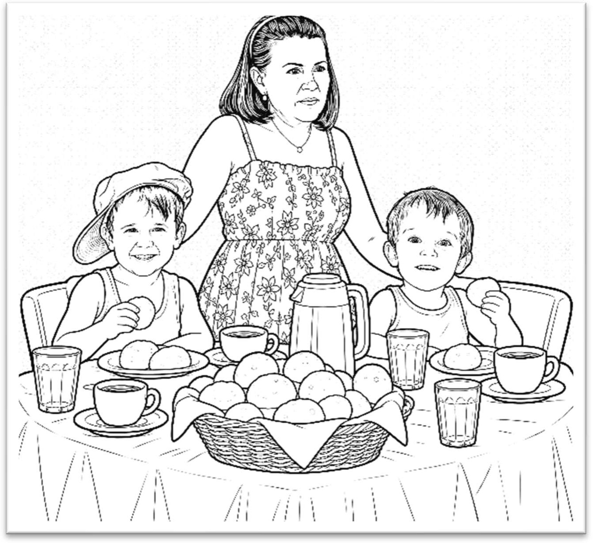

Pão de Queijo da Vó Zelinda
“Marcel e Luís Gustavo, meus queridos netos, filhos da minha nora mineira Wanda e do meu filho José Ailton, foram criados

no fundo do meu quintal.”
— Zelinda
Numa família com nora mineira, pão de queijo não é só receita. É questão de honra.
Marcel e Luís Gustavo cresceram ali, no fundo do quintal da avó, a poucos passos da cozinha. Perto o bastante para ouvir o forno abrir. Perto o bastante para sentir o cheiro antes de qualquer chamado. E, quando o pão de queijo saía, ninguém precisava ser chamado: a casa se enchia de meninos correndo ao redor da mesa, mãos estendidas antes da hora e alguém soprando o primeiro pãozinho, que ainda queimava os dedos.
Casquinha dourada por fora, macio por dentro, um fio de queijo que se esticava a cada mordida. Cada pãozinho trazia um pouco de Minas, a terra da mãe, e um pouco do quintal da avó, onde os dois aprenderam o que é aconchego.
Os meninos cresceram, e a correria pela casa ficou na lembrança. Mas basta o cheiro sair de um forno qualquer para tudo voltar: os abraços, a mesa cheia, a voz da avó pedindo para esperar esfriar — e ninguém esperando.
Porque o pão de queijo da vó Zelinda nunca alimentou só o corpo. Aquece a alma, guarda as raízes e mantém de pé a ponte entre Minas e o quintal onde esses netos cresceram.
Melhor ainda com um café passado na hora.